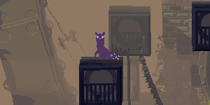
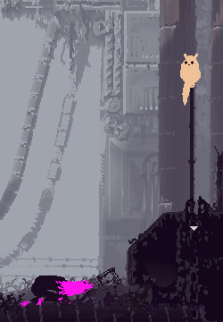

Rain World: Downpour is the highly anticipated expansion of the enigmatic and challenging universe of Rain World, inviting players back into its uniquely hazardous ecosystems with a promise of new adventures and perils. This sequel elevates the original's survival platformer experience, introducing a diverse array of new Slugcat characters, each equipped with distinct abilities and survival tactics, set against an expanded world teeming with mysterious lore, unseen dangers, and intricate biomes. With enhanced gameplay mechanics, multiplayer capabilities, and visually stunning upgrades, Rain World: Downpour promises to immerse players in a deeper exploration of its rich, post-apocalyptic world, challenging them to adapt, survive, and uncover the secrets hidden within the relentless rain.
In Rain World: Downpour, players are introduced to an intriguing array of new Slugcat characters, each bringing a fresh dynamic to the game's rich ecosystem. These new Slugcats are not just visually distinct but come with their own unique abilities and survival strategies, diversifying the gameplay and offering new perspectives on the world's lore.
From the nimble and swift, capable of leaping across wider gaps and evading predators with unparalleled agility, to the strong and resilient, able to push through obstacles and endure harsh conditions, these new characters enhance the depth of exploration and interaction within the game. Their introduction not only expands the narrative, weaving in new stories and backgrounds, but also significantly impacts how players approach challenges, solve puzzles, and navigate the perilous environments of Rain World. With each new Slugcat, players must adapt their play style, leveraging new abilities and strategies to survive the relentless downpours and the myriad of dangers lurking in the shadows.
An indulger of the simpler pleasures in life. Carrying the world in your stomach gives many tactical advantages, but comes at an increased cost of sustainability.
The Gourmand is slow and heavy, though they are capable of using their mass to their advantage by slamming into other creatures. They can also use objects to craft and can procure random objects from their stomach.
A fierce combatant, master of pyrotechnics and explosives. Keen to move up in the foodchain, your journey will surely be one lined with constant bloodshed and warfare.
Artificer is agile and strong, capable of producing explosions to propel themself through the air and able to craft explosives using certain objects.

Breathes underwater, and moves through the world with ease. These adaptations are essential, as you'll be pitted against a world of increasingly frequent floods, where time is of the essence.
The Rivulet is incredibly agile, having the highest movement speed, swim speed, and jump height of any Slugcat, as well as greatly increased lung capacity underwater. Cycles are much shorter and shelter failures are more frequent in Rivulet's campaign.
An abnormality who feeds using needles pulled from its body. A traveller from a far away land; A feeling in your depths sets you out once again, messenger...
Spearmaster has increased agility and the ability to hold Spears in both hands at once. They are unable to eat normally; they must instead rely on the Needles they produce from their tail to drain nutrients from other creatures.
Frail and armed with a long tongue. Your journey will be one of perfect enlightenment, but walking this path requires patience, caution, and complete attunement with the world.
Saint is able to grapple and swing from walls and ceilings with their long tongue, but they are otherwise weak and incapable of throwing Spears, making their agility essential to their survival.